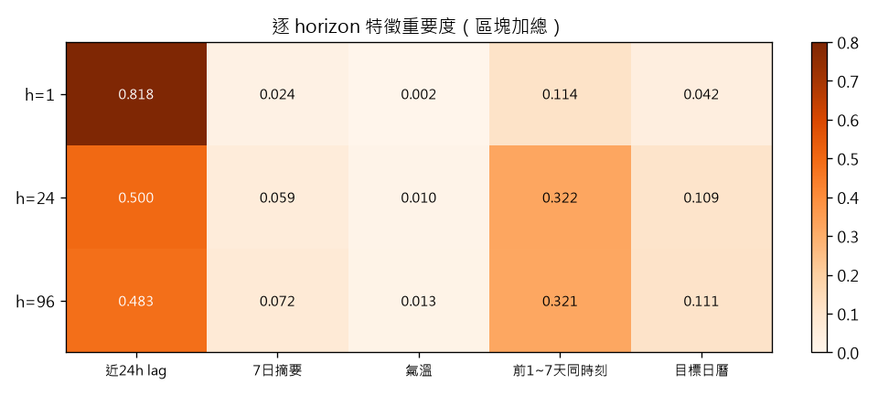
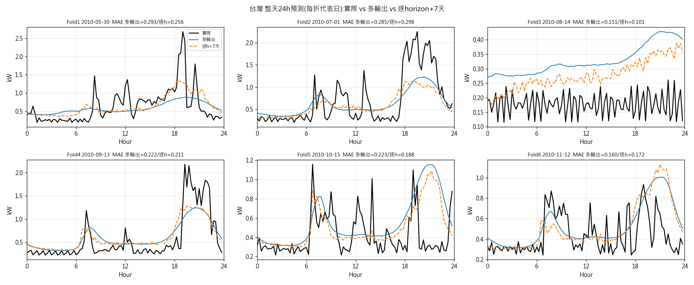
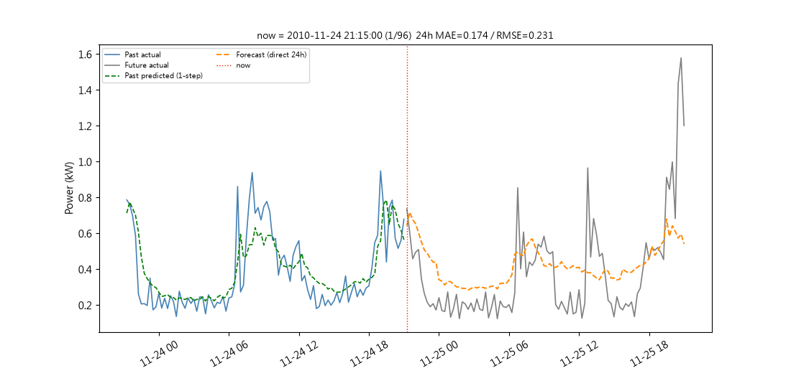
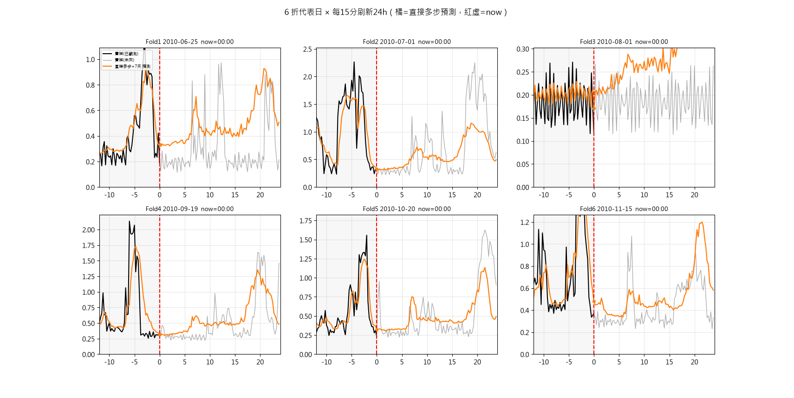

基於發電量與負載預測之家庭能源管理系統
負載預測子系統 — 結果總覽
本頁為系統中「負載預測」部分：單戶住宅不可轉移負載的未來 24 小時預測（96 步、每 15 分鐘），供家庭能源管理排程使用。以下為預測結果、成績與交接資料。
快速入口
成績（台灣情境、6 折平均）
| 模式 | MAE (kW) | RMSE (kW) | R²(flatten) | R²(per-slot) |
|---|---|---|---|---|
| 日內滾動（每 15 分鐘用最新觀測重預測） | 0.123 | 0.200 | +0.70 | +0.46 |
| 日初單次（每天 00:00 一次預測整天） | 0.221 | 0.318 | +0.21 | −0.37 |
結果圖









結果資料檔
- predictions.csv末折最後 30 天 h=1 預測 vs 實際（out-of-sample）
- rolling_forecast.csv最後一天日內滾動：96 個原點各帶未來 24h
- forecast_for_GA.csv資料最後 96 點的一次性回測（非交接檔）
- preds.npz6 折測試集完整預測矩陣 P/Y/t，供事後重畫
- train_run_log.txt訓練完整終端機輸出：6 折各折成績、平均彙整、特徵重要度
- predict_run_log.txt預測／交接包產生的終端機輸出
GA 交接包
- load_forecast_rolling.csv7 天 × 每 15 分一個 refresh × 未來 96 步（64,512 列）
- actual_load.csv真實值，每時刻一列（767 列，事後比對用）
- README.txt欄位定義、時間語意、使用注意
排程只能用預測值，真實值僅供事後畫圖比對。欄位定義見 README.txt。